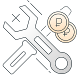

Фактор надежности
Что надо учитывать при выборе СТО и запасных частей? Разбираемся на опыте автовладельцев
и практике дилеров
Какие преимущества дает использование оригинальных запасных частей
В попытке сэкономить некоторые автовладельцы устанавливают более дешевые альтернативные запасные части.
Однако часто это не приносит никакой выгоды. Благодаря оригинальным деталям, напротив, автовладелец
получает ряд важных преимуществ.

Как экономия на неоригинальных запасных частях приводит к лишним тратам
Люди опасаются экономить на важных деталях двигателя, системы управления или топливной системы,
но вместо оригинальных расходных материалов нередко используют дешевые аналоги: трудно представить,
что из-за какого-нибудь фильтра или фары могут возникнуть серьезные проблемы. Однако установка неоригинальных
расходников тоже приводит к неприятным последствиям, а сэкономить за счет них вряд ли удастся, показывает опыт
автовладельцев.